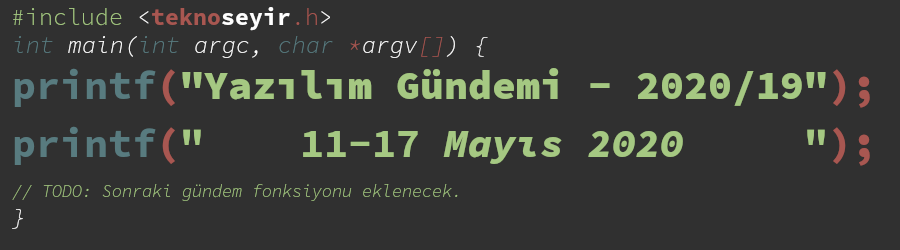
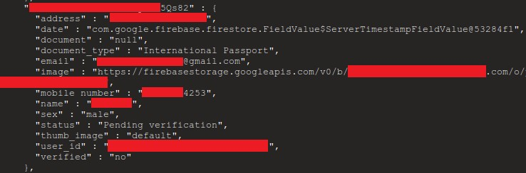
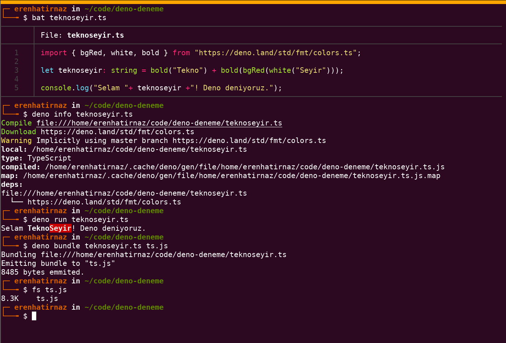
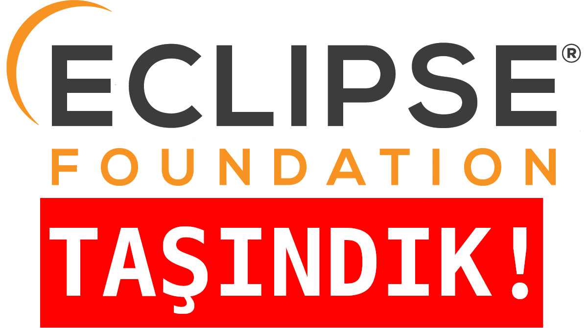
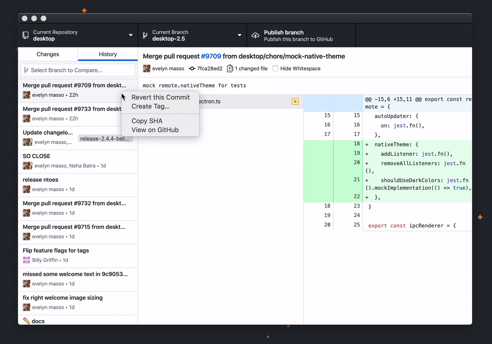

Yazılım Gündemi - 2020/19
11-17 Mayıs 2020
İçindekiler
- 1. Yanlış ayarlanmış Firebase veritabanları binlerce Android uygulamasının kullanıcı verilerinin sızmasına yol açtı
- 2. Deno 1.0 yayınlandı
- 3. Unreal Engine 5 ilk bakış duyuruldu
- 4. Eclipse Foundation Avrupa'ya taşınıyor
- 5. Firefox 77 ile birlikte
<input>ve<textarea>elemanlarında davranış değişiklikleri geliyor - 6. GitHub Desktop 2.5 ve GitHub CLI 0.8 sürümü yayınlandı
- 7. SourceHut, PeerTube projesini desteklemek için fon programını duyurdu
- 8. Yaklaşan Online Etkinlikler #EvdeKal
- 9. Diğer Haberler
- 10. Lisans

< Önceki Gündem | 11-17 Mayıs 2020 | Sonraki Gündem >
1 Yanlış ayarlanmış Firebase veritabanları binlerce Android uygulamasının kullanıcı verilerinin sızmasına yol açtı
Firebase, genelde mobil ve front-end geliştiricileri için içerisinde veritabanından, uygulama içi mesajlaşmaya kadar birçok ürünü barındıran bir Google hizmeti. Gündeme girmesine neden olan ise sunduğu veritabanı ürünlerinin yanlış konfigüre edilmesinden doğan bazı güvenlik sorunları. Comparitech isimli firma geçtiğimiz haftanın başında blog sitesinde yayınladığı yazı ile bazı Android uygulamalarının kaynak kodlarını açarak, içerisinden Firebase veritabanı URL'lerini alıp kullanıcı verilerine erişebildiklerini açıkladılar.

Şekil 2: Sızan bilgiler arasında binlerce E-posta adresi, telefon numarası, parola, ad soyad ve hatta GPS verisi bile mevcut.
Comparitech Güvenlik Araştırması Takım Lideri Bob Diachecko'nun açıkladığına göre 515.735 Android uygulaması incelenmiş ve bunların içerisinden 4.282 uygulamanın hassas kullanıcı verilerini sızdırığını tespit etmiş.
Firmanın bu güvenlik açığını ortaya çıkarmak için kullandığı ise çok basit hiçbir yüksek teknoloji ürünü gerektirmeyen bir yöntem. Şöyle ki; uygulamanın kaynak kodları (biliyorsunuz ki APK dosyaları aslında kaynak kodların bir çeşit sıkıştırılmış hali ve gerekli uygulamalar ile açılabiliyorlar) içerisinde "*.firebaseio.com" ifadesini aramak ve buldukları tüm bağlantıların sonuna ".json" ekleyerek istek göndermek. Eğer ilgili veritabanı yanlış ayarlanmışsa bu isteğin cevabı tüm veritabanının içeriğinin JSON formatında sunulmuş hali oluyor. Burada hatırlatmak lazım ki, APK dosyanız şifrelenmiş (encrypted) olsa bile veritabanınızın URL'sini bir string değişkeninde tuttuğunuz için yine görülebiliyor.
Comparitech firması 22 Nisan tarihinde bu güvenlik sorununu Google'a bildirmiş ve Google'da "biz geliştiricilere yanlış konfigüre edilmiş durumlar için bildirim gönderiyoruz. Bu durum için de etkilenen uygulamaların geliştiricilerini bilgilendireceğiz" demiş. Eğer sizin de Firebase veritabanı ürünlerini kullanan bir uygulamanız varsa açığın olup olmadığını kontrol ederek ve ilgili dokümantasyon sayfalarını detaylıca inceleyerek olası bir güvenlik sızıntısının önüne geçebilirsiniz. Hassas verileri veritabanında şifrelenmiş bir şekilde tutmanın ne kadar önemli olduğunu bir kez daha anlamış olduk.
2 Deno 1.0 yayınlandı
Gün geçmiyor ki yeni bir JavaScript teknolojisi daha çıkmasın. Şaka bir yana, bu yeni teknoloji diğerlerine göre daha fazla gündemde kaldı ve konuşuldu. Node.js'e alternatif olarak geliştirilen(fork değil), yine Node.js'i yaratan kişinin de (Ryan Dahl) yazarları arasında olduğu Deno projesinin ilk stabil versiyonu 1.0, geçtiğimiz hafta içerisinde duyuruldu. Deno da Node.js gibi sunucu tarafında JavaScript çalıştırmaya yarayan bir runtime çözümü.
Deno'nun neden ortaya çıktığını anlamak için önce Node.js'in sorunlarını
anlamak gerekiyor. Node.js'de Promise yapısının olmaması, güvensiz bir
runtime'a sahip olması, paket yönetimi, testler vb. konularda içerisinde bir
çözüm barındırmaması gibi sorunlar uzun zamandır Node.js kullananlar
tarafından dile getiriliyordu fakat bu ihtiyaçlar hep üçüncü parti araçlar
tarafından giderilebiliyordu. Node.js paket yönetimi için npm ile birlikte
geliyor fakat npm doğrudan Node.js tarafından geliştirilen bir araç değil,
kontrol onlarda değil yani. Güvensiz runtime'dan kast edilen ise Node.js'in
kontrolsüz sistem çağrıları (sys calls) yapabiliyor olması. Node.js ile bir
JavaScript dosyası çalıştırdığınızda o işlem, sistemin tüm kaynaklarını
kullanabiliyordu. Örneğin istediği bir dosyayı okuyabilir ya da yazabiliyordu.
Bunun gibi Node.js'in tasarımından kaynaklanan diğer sorunlar için doğrudan
Node.js'in yaratıcılarından Ryan Dahl'ın JSConf EU 2018 etkinliğinde yaptığı
konuşmayı buraya tıklayarak izleyebilirsiniz.
Şekil 3: Deno'nun resmî logosu
Gel gelelim Deno'ya… Deno'da yukarıdaki birçok sorun çözülmüş durumda, artık tek bir araç kurarak geliştirme ortamınızdaki birçok ihtiyacınızı giderebiliyorsunuz. Şöyle ki:
deno run: Bu komut ile kodlarınızı direkt çalıştırabilirsiniz. Üstelik kendi içerisinde TypeScript desteği ile geliyor, yani TypeScript kodlarınızı derleyici ile JavaScript'e dönüştürüp o şekilde kullanmanıza gerek yok. Direktdeno run deneme.tsşeklinde çalıştırabiliyorsunuz.deno bundle: Bu komuta parametre olarak verdiğiniz bir kaynak kod dosyası (JS ya da TS olabilir), tüm bağımlılıklarıyla birlikte tek bir dosya haline getiriliyor. bir dosya haline getirmeye yarıyor.deno fmt: Kodlarınızın otomatik olarak formatlanmasını sağlar.deno doc: Bir modül için tanımlanmış dokümantasyon metinlerini gösteriyor.deno test: Projeniz için yazdığınız testleri bu komut yardımıyla çalıştırabiliyorsunuz.

Şekil 4: Deno'yu sizler için denedim. Örnek tabii ki çok basit ama Node.js'e göre daha hızlı geliştirebildim.
Yukarıdaki örnekte de gördüğünüz gibi hiç package.json dosyası gibi şeylerle
uğraşmadan doğrudan ilgili dosyanın adresini import olarak belirterek dosyama
ekledim ve deno info komutuyla hem kodlarımı derledim hem de bağımlılıkları
indirdim. deno info komutunu çalıştırmak zorunda değilsiniz elbette direkt
deno run teknoseyir.ts komutu da çalıştırabilirsiniz. Eğer siz de yukarıdaki
dosyayı denemek isterseniz bu adresten indirip, deneyebilirsiniz:
https://gist.github.com/erenhatirnaz/fc6e726fff2731bc1ed763bb2ba7d3e8
Hepimizin aklındaki soru ise "Node.js'yi bitirir mi?" olduğunu tahmin ediyorum fakat henüz böyle bir çıkarım yapabilmek için çok erken olsa da sunduğu özellikler bakımından gerçekten umut vaat ettiğini düşünüyorum. Node.js için yazılmış kütüphaneler için henüz bir uyumluluk çözümü yok fakat şu an geliştirilme aşamasındaymış, ileride Node.js için de yazılmış kütüphaneleri kullanabilir hale geldiğimizde belki o zaman Node.js'in ömrünü konuşmaya başlayabiliriz. Bakalım JavaScript ekosistemini ileride ne gibi değişlikler bekliyor. Hep birlikte göreceğiz.
Deno hakkında daha detaylı bilgiler için konu başlığına eklediğim bağlantıya tıklayabilir ya da DevNot sitesinden Zafer Ayan'ın yazdığı şu türkçe yazıyı okuyabilirsiniz.
Siz Deno hakkında ne düşünüyorsunuz? Deneyebildiniz mi? Denediyseniz olumlu/olumsuz eleştirileriniz neler? Yorumlar bölümünde fikir alışverişi yapalım.
3 Unreal Engine 5 ilk bakış duyuruldu
Geçtiğimiz hafta içerisinde Epic Games firmasının sahip olduğu Unreal Engine oyun motorunun 5 numaralı versiyonunun ilk bakış videoları ve yayınlanma süreci hakkında bazı detaylar duyuruldu. Zaten geçtiğimiz haftanın olay yaratan konularından biri de bu oldu.
Front-end geliştirme alanından bile daha uzak olduğun oyun geliştirme alanıyla ilgili bir haber olduğu için teknik kısımlarını pek iyi yorumlayamayacağım fakat duyurulan şeyleri anladığım ölçüde sizlere aktarmaya çalışayım:
- Nanite: Bu yeni teknoloji sayesinde artık 3D tasarım yapan sanatçılar poligon sayısını çok kafasına takmadan hayallerindeki tasarımları dijital ortama aktarabilecekler. ZBrush ile taratılmış nesnelerden, CAD verilerine kadar birçok obje bu şekilde kullanılabilecek. Gerçek zamanlı olarak çalışan bu teknoloji kalite kaybı olmadan daha hızlı geliştirme yapmaya olanak sağlayacak.
- Lumen: Bu sürümle birlikte gelecek olan tamamen dinamik aydınlatma çözümü. Bu özelliği okuyunca benim aklıma NVIDIA'nin RTX çözümü geldi. Bu da aynı onun gibi ışığın dinamik olarak hesaplanmasını ve dolayısıyla ortamlara ve zamana göre nesnelere vuran ışığın değişmesini sağlıyor. Tabii ki bu da gerçek zamanlı olarak GPU üzerinde hesaplanıyor ve oyuna yansıtılıyor. Teknik bilgim olmadığı için bu özelliğin RTX ile bağlantılı olup olmadığını bilemiyorum fakat konu hakkında bilgisi olan arkadaşlar yorumlar bölümünde belirtirse buraya ekleme yapabilirim.
Unreal Engine 5 ile birlikte çekirdeğe eklenen yeni teknolojiler bu şekildeydi. Unreal Engine 5 ön izleme sürümünün 2021'in ilk ayları içerisinde duyurulması beklenirken, tamamen stabil sürümün ise 2021'in daha ileri tarihlerinde yayınlanması planlanıyor. Unreal Engine 4 kullanan geliştiricilerin 5'e geçebilmeleri için uyumluluk çalışmalarının da devam ettiğini, geçiş sürecini kolaylaştırmak için çaba gösterdiklerini aktarıyorlar.
Unreal Engine 5 ile birlikte Epic Games bir de yeni bir servis duyurdu: Epic Online Services. Bu yeni servis sayesinde oyun geliştiricileri oyunlarına daha kolay bir şekilde çoklu oyuncu desteği eklemenin yanı sıra, lider tabloları, başarımlar vb. şeyleri de ekleyebilecekler. Üstelik bu hizmet tüm geliştiriciler için ücretsiz olarak sunuluyor. Epic Games, bu hizmeti sadece kendi oyun mağazası için sınırlamamış platformlar arası (cross-platform) desteği de eklemiş. Yani Playstation'dan XBox'a oradan iOS ve Android'e kadar birçok platformda oyuncular aynı şeylere sahip olabilecek.
Son olarak ise artık Unreal Engine kullanan geliştiriciler ve oyun yapımcıları yıllık gelirleri 1 milyon dolar olana kadar Unreal Engine'e lisans ücreti ödemek zorunda değiller. Lisanslama ile ilgili sorular için şu bağlantıda yer alan sıkça sorulan sorular kısmına göz atabilirsiniz.
Bu gelişme oyun geliştirme dinamiklerini nasıl etkiler, ilerleyen süreçlerde bizi neler bekliyor pek bilemiyorum ama oyun geliştirme alanında çalıştığını tahmin ettiğim Sosyal'den @ardazeytin arkadaşımızın yazdığı şu gönderiye bakabilirsiniz: https://teknoseyir.com/durum/1265228.
Oyun geliştirme alanında çalışan başka arkadaşlar varsa bu konu hakkında düşündüklerini yorumlar bölümünde dile getirirse çok memnun olurum.
4 Eclipse Foundation Avrupa'ya taşınıyor

Çoğunlukla Java IDE'si olarak tanıdığımız Eclipse, aslında Eclipse Foundation isimli bir yapının parçası. Geçtiğimiz hafta içerisinde ise Eclipse Foundation, tüzel kişiliklerini Brüksel'e taşıyarak bir Uluslararası kâr amacı gütmeyen dernek haline geleceklerini açıkladılar.
Şu anda Amerika merkezli bir vakıf olan Eclipse Foundation, taşınma nedeniyle ilgili açıklamalarda genelde "üyelerimiz ve katkı sağlayanlarımızın çoğu Avrupa'da olduğu için biz de onlara yakın olmak için merkezimizi oraya taşıyoruz" şeklinde özetliyorlar fakat ben Amerika'daki güncel siyasi durumun da konu üzerinde etkisi olabileceğini düşünüyorum. Bir de tüzel kişilikle ilgili bazı yasal kolaylıklardan bahsedilmiş sanırım fakat alanım olmayan bir konu olduğu için pek fazla bir şey anlamadım.
Taşınma süreciyle ilgili detaylar şu şekilde özetlenebilir:
- Uluslararası kar amacı gütmeyen derneğin resmî işlemlerinin Temmuz 2020'de tamamlanması bekleniyor.
- Fiziksel olarak Avrupa'da barındırılan, üzerinde GitLab kurulu sunucularda tüm projelerinin kaynak kodlarına ve dokümanlarına bu yılın yaz ayları itibariyle erişilebilecek. Burası geliştiriciler ve katkı sağlayanlar için üçüncü bir seçenek olarak sunulacak.
- Eclipse ve Eclipse Foundation isimleri ve markaları yeni Belçika varlığı olarak kontrol edilecek.
- Eclipse Foundation zaten hali hazırda Kanada ve Avrupa (Almanya ofisi mevcuttu) üzerinde eş zamanlı yönetildiği için vakfın operasyonlarının en düşük seviyede etkileneceği tahmin ediliyor.
Biz geliştiricileri pek fazla etkileyeceğini sanmıyorum ama yinede sektörümüzdeki önemli bir vakıfın böyle büyük bir taşınma işine girişmesini gündeme almak istedim. Daha detaylı bilgiler için konu başlığına eklediğim bağlantıya tıklayabilir ya da şu adresdeki sıkça sorulan sorular sayfasını ziyaret edebilirsiniz. Eclipse Foundation Europe ana sayfası için burayı ziyaret edebilirsiniz: https://www.eclipse.org/europe/
5 Firefox 77 ile birlikte <input> ve <textarea> elemanlarında davranış değişiklikleri geliyor
Mozilla tarafından geliştirilen web tarayıcısı Firefox'un bir sonraki sürümü
olarak yayınlanacak 77 numaralı sürümünde <input> ve <textarea>
elemanlarında değişiklikler olacağı geçtiğimi hafta Firefox Site Compatibility
sitesinde duyuruldu.
Artık bu elemanlara kopyala/yapıştır ile bir içerik yapıştırdığımızda eğer
içeriğin boyutu, elemanın maxlength property'sindeki boyuttan büyükse,
yapıştırdığımız içerik otomatik olarak kırpılmayacak. Yani kullanıcılar o
elemana daha uzun içerikler yapıştırabilecekler fakat bu demek değil ki
Firefox bizim koyduğumuz kuralı görmezden geliyor. Firefox, maxlength
değerine uymayan formları submit etmemeye devam edecek. Yapılan davranış
değişikliğinin sebebi ise kullanıcıların şifre yönetim uygulamalarının ilgili
elemana otomatik olarak yapıştırdığı şifrelerin kırpılmamasını sağlamak. Yani
kullanıcının "acaba parolamla ilgili bir sıkıntı mı var" endişesini gidermeye
yönelik. Eğer girilen metin olması gerekenden uzunsa Firefox kullanıcıya şöyle
bir mesaj gösterecekmiş: "Lütfen bu metini 20 karakter ya da daha az olacak
şekilde kısatın (şu an 30 karakter kullanıyorsunuz)".
Çalışan projelerimizi doğrudan etkileyecek bir durum göremiyorum ama yine de dikkate almaya değer bir davranış değişikliği olduğu için değinmeden geçmek istemedim. Daha detaylı bilgiler ve referanslar için konu başlığına eklediğim bağlantıya tıklayabilirsiniz.
6 GitHub Desktop 2.5 ve GitHub CLI 0.8 sürümü yayınlandı
GitHub'ın grafiksel masaüstü uygulaması ve komut satırı üzerinden çalışan aracı geçtiğimiz hafta içerisinde yeni sürümlerine kavuşturlar. Yeni sürümler ile gelen bazı özellikler şu şekilde:
6.1 [GitHub Desktop] Etiket oluşturma ve gönderme

Artık GitHub uygulaması üzerinden yeni git etiketleri (git tag) oluşturup,
bunları GitHub.com üzerindeki uzak deponuza gönderebileceksiniz. Tabii ki
var olan etiketleri de listeleme özelliği mevcut.
6.2 [GitHub CLI] Isseu ve Pull Requestleri kontrol etme
GitHub CLI üzerinden zaten bir proje üzerinde issue oluşturabiliyor ya da
pull request gönderebiliyorduk fakat işlemler sadece bunlarla kısıtlıydı.
Diğer ek işlemler için tarayıcıda açmak gerekiyordu. Bu sürümle birlikte
artık issue ve pull requestlerimizi yaratırken onlara label, reviewer,
projects, milestone gibi ek bilgiler iliştirebileceğiz. Aynı zamanda gh pr
close, gh pr reopen ve gh issue close, gh issue reopen gibi komutlarla
ilgili issue ya da pull requestleri açıp kapatabileceğiz. Komut satırı
kullanmayı seven biri olan beni mutlu eden gelişmeler fakat henüz tam zamanlı
kullanılabilecek kadar gelişmedi hele bir 1.0 sürümü çıksın bakalım…
7 SourceHut, PeerTube projesini desteklemek için fon programını duyurdu
SourceHut'ın ne olduğundan ve felsefesinden önceki yazılım gündemi yazılarının birinde (bkz: Yazılım Gündemi - 2020/17) bahsetmiştim. O yazıyı okumayanlar için kısa bir özet: SourceHut da GitHub ve GitLab gibi uzak bir git deposu hizmeti fakat tamamen özgür yazılım prensiplerine göre ve açık kaynak şekilde geliştiriliyor (ve JavaScript kullanmıyor). PeerTube ise YouTube'a benzer, gelişmiş ve dağıtık bir video paylaşma platformu. Teknik detaylarına pek fazla hakim değilim fakat siz bir PeerTube sitesine bir video yüklediğinizde aslında bir çeşit torrent paylaşmış gibi oluyorsunuz ve tarayıcı üzerinden o videoyu izleyen diğer kişiler de hem indiriyor hem de diğer kullanıcılar için gönderiyor. Bu sayede dağıtık bir yapı kurulmuş oluyor. İsterseniz sizde kendi sunucularınızda bir PeerTube ayağa kaldırabilir ve bu ağın bir parçası olabilirsiniz. İkisi de çok sevdiğim ve bir çeşit gönül bağı kurduğum projeler. Hazır yeri gelmişken ikisini birden gündemde konuk etmek istedim :).
SourceHut ise geçtiğimiz hafta içerisinde PeerTube projesini desteklemek ve içerik sayısını arttırmak için bir çeşit fon ayırdığını açıkladı. 5.000$'lık bu fon sayesinde PeerTube'a içerik üretmek isteyen kişilere ekipman desteği ve kitle fonlama araçları sağlanacak. Kitle fonlama aracı ise yine özgür yazılım prensipleriyle geliştirilen Librepay. Fakat bu fondan faydalanabilmenin bazı şartları var:
- Hali hazırda başka bir platform üzerinde videolu içerik üretmiyor olmanız gerekiyor fakat bu o kadar sert bir kural değil sanırım, birkaç video üretmişseniz yine de başvurunuzda bunu açıkca belirterek değerlendirilme süreçlerine dahil olabiliyorsunuz.
- Videolarınızı sadece PeerTube'a yükleyebilirsiniz. YouTube, Vimeo vb. platformlarda PeerTube için özel ürettiğiniz içerikler bulunamaz.
- Oluşturduğunuz video içerikler Creative Commons lisansları ile paylaşılmalıdır.
- En az 5 video üretmeniz bekleniyor. Eğer bu 5 videodan sonra videolu içerik üretmenin size göre olmadığına karar verirseniz fon yardımıyla aldığınız ekipmanları geri vermeniz gerekiyor.
- Librepay üzerinden aylık en az $20'dan fazla kazanmaya başladığınızda, devam eden barındırma maliyetleri tüm içerik oluşturucular arasında eşit olarak paylaştırılacak. Yani şimdilik aylık $45 olan bu maliyet içerik oluşturucular arasında eşit bir şekilde bölüştürülür. Librepay gelirinizin %25'inden fazla ödeme yapmanız asla beklenmiyor; SourceHut gerisini tamamlıyor.
Eğer bu fona başvurmak isterseniz sir@cmpwn.com e-posta adresine, başlığı "PeerTube bootstrap application: <ad soyad>" olan ve içeriğinde de kendinizi tanıtarak ne tür bir içerik oluşturmak istediğinizden bahsedebilirsiniz.
SourceHut'ın kendi barındırdığı PeerTube hizmeti için burayı ziyaret edebilirsiniz: SpacePub. Diğer detaylar için konu başlığına eklediğim bağlantıya tıklayabilirsiniz.
Geçtiğimiz hafta SourceHut'daki diğer bazı gelişmeler de bu şekilde:
- Mayıs 2020 için SourceHut'da pişen özellikler yazısı yayınlandı.
- SourceHut'a Plan 9 desteği eklendi.
8 Yaklaşan Online Etkinlikler #EvdeKal
| Etkinlik İsmi | Tarihi |
|---|---|
| React ile JavaScript Uygulamaları Geliştirme | 18 Mayıs 16:00 |
| Bulutta Yüksek Performanslı ve Verimli Sistem | 18 Mayıs 23:00 |
| PostgreSQL Sohbetleri 18: PostgreSQL'de gözlemleme | 19 Mayıs 13:30 |
| Açık Seminer 22. Gün: PostgreSQL'e Giriş | 19 Mayıs 13:00 |
| .NET Core Refit Kullanımı | 19 Mayıs 14:00 |
| Deno: Yeni JavaScript Runtime'ı | 19 Mayıs 21:15 |
| Örneklerle Unit Testing ve TDD | 20 Mayıs 12:30 |
| Açık Seminer 23. Gün: PostgreSQL Temel Bilgiler | 20 Mayıs 14:00 |
| HTML ve CSS ile Web Arayüz Tasarımı | 20 Mayıs 18:00 |
| Building .NET Core 3.1 Serverless Application in AWS | 20 Mayıs 22:00 |
| Açık Seminer 24. Gün: Postgres’de Kuruluş ve Gelişim Yolculuğu | 21 Mayıs 14:00 |
| Asynchronous Code Execution Under the Hood | 21 Mayıs 18:00 |
| AWS - Cloud öğrenmeye nereden ve nasıl başlarım? | 21 Mayıs 23:00 |
| HackerConf.Stream Virtual Cyber Security Conference | 22 Mayıs 09:59 |
| Açık Seminer 25. Gün: Geliştiriciler için PostgreSQL | 22 Mayıs 14:00 |
| Unity ile Oyun Programlamaya Giriş 101 | 22 Mayıs 21:15 |
9 Diğer Haberler
- GitLab.com 13.0 sürümüne güncellenecek. 22 Mayıs günü kesintiler yaşanabilir.
- GitHub "Organizastion secrets" özelliğini duyurdu.
- Java 25 yaşında.
- Rust 5 yaşında.
- Amazon ve Red Hat yeni ortak projelerini duyurdu: Amazon Red Hat OpenShift. Alternatif
- AWS, Kubernetes için bulut geliştirme kitini açık kaynak hale getirdi: cdk8s.
- AWS kendi ARM-tabanlı çipi için yeni EC2 servisini tanıttı: EC2 M6g.
- Google Cloud VMware Engine Genel Erişilebilir (GA) hale geldi.
- Amazon Kendra Genel Erişilebilir (GA) hale geldi.
- JetBrains'den haberler:
- YouTrack, 10 kişilik takımlar için ücretsiz oldu.
- Python Geliştiricileri Anketi 2019 sonuçları açıklandı.
- MPS 2020.1 sürümü yayınlandı.
- IntelliJ IDEA, Çince, Japonca ve Korece dil desteği için erken erişim programı başlatıldı.
- TypeScript programlama dilinin 3.9 sürümü duyuruldu.
- Erlang/OTP 23 sürümü yayınlandı.
- Switft 5.3 ile birlikte Windows ve bazı Linux dağıtımları için destek gelecek.
- WebAssembly çalıştırabilen ilk Java kütüphanesi duyuruldu: Wasmer JNI.
- Next.js 9.4 sürümü yayınlandı.
- Bootstrap 4.5.0 sürümü yayınlandı.
- Apache Kafka, Apache ZooKeeper bağımlığımından kurtuluyor.
- PostgreSQL 12.3, 11.8, 10.13, 9.6.18 ve 9.5.22 sürümleri yayınlandı.
- CockroachDB 20.1 sürümü duyuruldu.
- MongoDB 4.2.6 sürümü yayınlandı.
- VSCode için MongoDB eklentisi ön izleme olarak yayınlandı.
- HAProxy Data Plane API 2.0 sürümü duyuruldu.
- Haxe 4.1.0 sürümü yayınlandı.
- Proxmox VE 6.2 sürümü yayınlandı.
- Zabbix 5.0.0 sürümü yayınlandı.
- Hyperdrive v10 sürümü duyuruldu.
- Mun v0.2.0 sürümü yayınlandı.
10 Lisans

Yazılım Gündemi - 2020/19 yazısı Eren Hatırnaz tarafından Creative Commons Atıf-GayriTicari-AynıLisanslaPaylaş 4.0 Uluslararası Lisansı (CC BY-NC-SA 4.0) ile lisanslanmıştır.